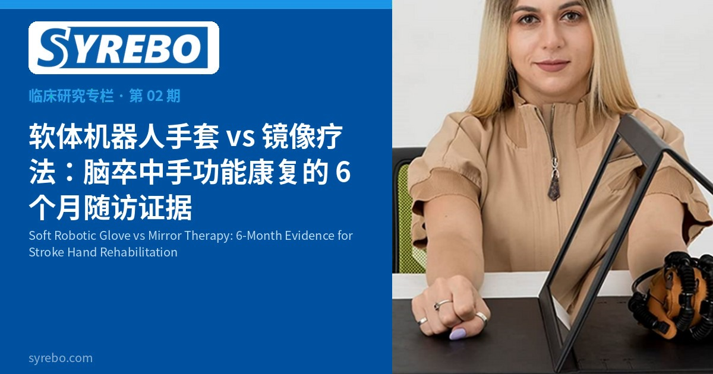

羿生临床研究专栏
循证 · 康复机器人手套临床研究解读
文献摘录
Soft robotic gloves versus mirror therapy: a long-term comparative study on hand function and motor recovery in post-stroke rehabilitation
Abdelraouf OR, et al.
Journal of Rehabilitation Medicine, 2025
DOI: 10.2340/jrm.v57.43482 · PMID: 40874348 · NCT05898971 · PMCID: PMC12406746



镜像疗法用视觉错觉带动患侧，是卒中后手康复里很常见的一种做法；软体机器人手套则用柔性驱动把开合重复做出来。二者谁能把变化留得更久，不能靠训练结束时的一次评估回答。《Journal of Rehabilitation Medicine》2025 年发表的一项单盲随机对照，把软体机器人手套和镜像疗法比较了 8 周，并在干预结束后随访 6 个月。论文报告，干预结束时手套组在盒与块测试、握力和上肢 Fugl-Meyer 评分上的组间改善具有统计学意义，而且 6 个月时这种改善仍然维持。
手功能训练最容易被问的不是“结束时有没有分差”，而是“随访时还在不在”。镜像疗法设备简单，依赖患者对镜中影像的注意；软体手套把重复交还给外部助力，对注意力和体力的要求不同。两种都是康复手段，不是品牌之间的排名。
如果只比较训练刚结束的分数，可能会把短期刺激当成稳定变化。带 6 个月随访的随机对照，才可能看出组间差异有没有留在干预结束之后。这篇论文要填的就是这段随访证据。
论文将手套制造商列为上海司羿智能科技有限公司，但没有写明具体产品型号。羿生是司羿智能的中国品牌，国际品牌为 Syrebo。专栏配图为训练设备场景，是否为研究所用设备尚未核实。
研究设计
单盲随机对照：两组先接受常规物理治疗，再分别进行软体机器人手套训练或镜像疗法；随访期间常规物理治疗继续进行。结局包括手的抓放灵活度（盒与块测试）、握力，以及上肢运动功能（FMA-UE）。随访设在干预结束后 6 个月。
样本与周期
论文摘要称 49 例患者被随机分组；研究流程描述称 54 例随机分组、49 例完成随访并纳入分析。论文其他部分的筛选、入组人数和流程图部分表述存在差异，尚待澄清。干预 8 周，并在 6 个月时再次评估。试验注册号 NCT05898971。
核心结果
论文报告，干预结束时手套组相对镜像疗法组的组间改善为：盒与块测试 P=0.004，握力 P=0.011，FMA-UE P=0.021。6 个月随访时，手套组的改善仍然维持。这些 P 值是该研究的统计报告，只说明这次样本里的组间差异，不能外推成每名患者的恢复幅度。
相对只做到干预结束的试验，这篇论文多了一层时间信息：作者报告两种康复方案的组间差异在随访点仍然存在，期间常规物理治疗继续进行。对临床阅读来说，这提供了比单看结束时更长的观察视角。
研究流程所述纳入分析的 49 例仍然是小样本，两组的基线、病变侧和随访期间的练习，都会影响随访分数。结论适用于本论文的纳入人群和对照方式。
研究边界 研究流程称 49 例纳入分析，论文的筛选、入组人数及流程图部分表述尚需澄清；部分统计数据在正文与表格之间的描述不同或仍待核实。P 值与“改善得以维持”均来自该研究的报告，不是产品疗效承诺。